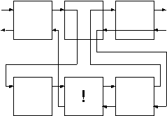

1. 截断
直到目前为止，我们都一直在使用Prolog内建的回溯功能。使用此功能可以方便地写出结构紧凑的谓词来。
但是，并不是所有的回溯都是必须的，这时我们需要能够人工地控制回溯过程。Prolog提供了完成此功能的谓词，他叫做cut，使用符号！来表示。
Cut能够有效地剔除一些多余的搜索。如果在cut处产生回溯，它会自动地失败，而不去进行其它的选择。
下面我们将看看它的一些实际的功效。

请参照上图来理解cut的功能。当在回溯遇到cut时，它改变了回溯的流程，它直接把控制权传给了上一级目标，而不是它左边的目标。这样第一层的中间的那个目标以及第二层！左边的子目标都不会被Prolog重新满足。
下面我们将举个简单的例子来说明cut的作用。首先加入几条事实：
data(one).
data(two).
data(three).
下面是没有使用cut的情况：
cut_test_a(X) :-
data(X).
cut_test_a('last clause').
下面是对上面的事实与规则的一次询问。
?- cut_test_a(X), write(X), nl, fail.
one
two
three
last clause
no
我们再来看看使用了cut之后的情况。
cut_test_b(X) :-
data(X), !.
cut_test_b('last clause').
?- cut_test_b(X), write(X), nl, fail.
one
我们可以看到，由于在cut_test_b(X)子句加入了cut，data/1子目标与cut_test_b父目标都没有产生回溯。
下面我们看看把cut放到两个子目标中的情况。
cut_test_c(X,Y) :-
data(X), !, data(Y).
cut_test_c('last clause').
?- cut_test_c(X,Y), write(X-Y), nl, fail.
one - one
one - two
one - three
no
cut抑制了其左边的子目标data(X)与cut_test_c父目标的回溯，而它右边的目标则不受影响。
cut是不符合纯逻辑学的，不过出于实用的考虑，它还是必须的。过多地使用cut将降低程序的易读性和易维护性。它就像是其它语言中的goto语句。
当你能够确信在谓词中的某一点只有一个答案，或者没有答案时，使用cut可以提高程序的效率，另外，如果在某种情况下你想让某个谓词强制失败，而不让它去寻找更多的答案时，使用cut也是个不错的选择。
下面将介绍使用cut的技巧。
2. 使用Cut
为了让冒险游戏更加有趣，我们来编写一个小小的迷题。我们把这个迷题叫做puzzle/1。puzzle的参数是游戏中的某个命令，puzzle将判断这个命令有没有特殊的要求，并做出反应。
我们将在puzzle/1中见到cut的两种用法。我们想要完成的任务是：
如果存在puzzle，并且约束条件成立，就成功。
如果存在puzzle，而约束条件不成立，就失败。
puzzle，成功。
在本游戏中的puzzle是要到地下室（cellar）中去，而玩家必须拥有手电筒，并且打开了，才能够进到地下室中。如果这些条件都满足了，就不需要Prolog再去进行其它的搜索。所以这里我们可以使用cut。
puzzle(goto(cellar)):-
have(flashlight),
turned_on(flashlight),
!, fail.
puzzle(_).
如果约束条件不满足，Prolog就会通知玩家不能执行命令的原因。在这种情况下，我们也想puzzle谓词失败，而不去匹配其它的puzzle子句。因此，此处我们也使用cut来阻止回溯，并且在cut的后面加上fail。
最后一个子句包括了所有非特殊的命令。这里我们看到，使用cut就像其它语言中的if语句一样，可以用它来判断不同的情况。
从纯逻辑的角度来看，能找到不使用cut而完成同样功能的方法。这时需要使用内部谓词not/1。有人认为使用not/1可以使程序更加清晰，不过滥用not同样也会引起混乱的。
当使用cut时，子句的顺序显得尤为重要了。上例中，puzzle/1的第二个子句可以直接打出错误信息，这是因为我们知道只有当第一个子句在遇到cut前失败时，Prolog才会考虑第二个子句。
而第三个子句考虑的是最一般的情况，这是因为，前面两个子句已经考虑了特殊的情况。
如果把所有的cut都去掉，我们就必须改写第二、三个子句。
puzzle(goto(cellar)):-
not(have(flashlight)),
not(turned_on(flashlight)),
vwrite('It's dark and you are afraid of the dark. '),
fail.
puzzle(X):-
not(X = goto(cellar)).
在这种情况下，子句的顺序就无关紧要了。
有趣的是，事实上not/1子句可以使用cut来定义，它同时还用到了另一个内部谓词call/1。call/1把它的参数作为谓词来调用。
not(X) :-
call(X), !, fail.
not(X).
在下一章中我们将学习如何在游戏中加入命令循环。那时我们就可以在每次运行玩家的命令之前使用puzzle/1来检验它。这里我们先试试puzzle的功能。
goto(Place) :-
puzzle(goto(Place)),
can_go(Place),
move(Place),
look.
如果玩家现在在厨房里，并且想到地下室中去。
?- goto(cellar).
It's dark and you are afraid of the dark.
no
?- goto(office).
You are in the office...
而如果玩家拿着打开的手电筒，它就可以去地下室了。
?- goto(cellar).
You are in the cellar...